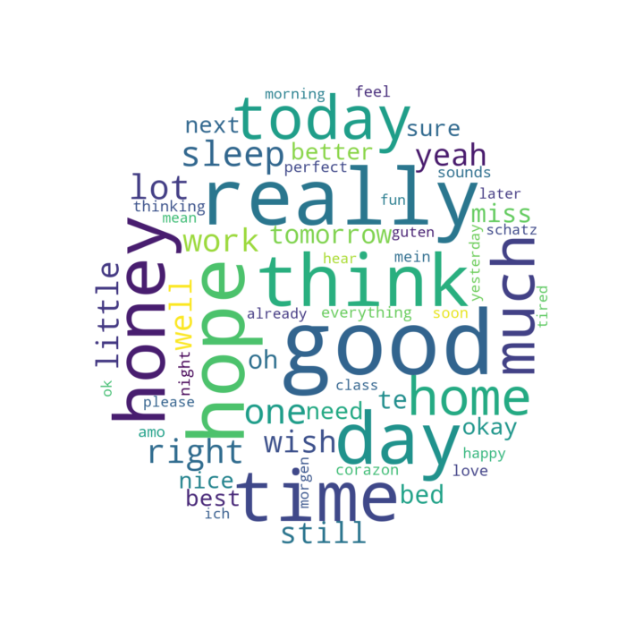

Geeky Love!
Happy Anniversary!
Hi honey! I hope that this in not too much, but if I am spending so much time at university, might as well use what I'm learning for something useful. For this special date, I prepared a brief analysis on the WhatsApp conversations we have had through our history together. I found some interesting things about us, I hope you like it :)
About the Data
I analyzed all the WhatsApp messages we have sent from the day we started talking through the app, until a few days before our anniversary, that is, from 13.07.2017 to 21.02.2019. The messages include a lot of cheesy notes, good morning words and lots of love. These are some general facts I found:
| Total messages sent | 38,996 |
| Total days we have messaged | 556 |
| Average messages each day | 70.02 |
| Day of the week with most messages | Tuesday |
| Busiest day | 27.04.2018 (257 messages!) |
| # of times we have written "honey" | 1004 times |
| # of times we have written "amo" | 434 times |
| # of times we have written "liebe" | 217 times |
| # of times we have written "love" | 39 times |
To begin with, I wanted to know more about our messaging habits, so I decided to start checking how many messages we have sent to each other:

We have an almost even distribution, but maybe my drunken messages have gone too far :D No really, after we started talking more than 1 year ago, we haven't stopped!
About the Dates
I think we use this messaging app very often, and I wanted to investigate more about hour habits with it. So, I started with the big picture. The first thing I wanted to see was how many messages we sent through different months:

The month where we have sent the most messages is January 2018, and the one that had the least messages is November 2017 (This is my fault, I'm really REALLY sorry for that). It seems that there is a period of time in which we talk a lot, and then we stop. The best explanation that I have for this is the trips we have made to visit each other, as we will see in the next graph:

Since we know each other, we only haven't messaged for 33 days. This is an interesting number, because these days appear after we became a couple. I noticed that when they happen it means that we are actually together (so no need of WhatsApp). Still, we have been physically together more days than those in the graph (but it is a good proxy). You can see that they appear much more often now that I'm here in Germany. Two big clusters of no-message days can also be seen when I came to Berlin, and during our vacations in Mexico.
There are 6 days in which we have sent more than 190 messages, the closest one to date on 07.02.2019 with 220 messages, and the biggest one on 27.04.2018 with 257. We can get another idea of how much we message through this heat map, where I compare every day; The darker the day, the more we messaged:
We have seen that we message constantly, But, do we do it the same every day of the week? I have this graph to investigate that:

There is not a significant variation on every other day, but we can see that Tuesdays and Wednesdays are our busiest and least busy days. We constantly message, no matter what day it is :D
Finally, at what time do we like to message the most?

These times are all in German time zone. We prefer to talk more on the afternoons. I think this also holds when I was in Mexico, as you had to wait for me to wake up. I believe the messages we sent on the early mornings were normally during the afternoons in Mexico.
About the Words we use
Antoher iteresting thing that I analyzed are the words that we used the most. Without the stop-words, these are the most common words that we use:
There are a couple or remarks I want to make about this graph. First of all, even if the words "I" and "you" are stop-word, I didn't delete them because I think that they convey a nice meaning. We talk about what happens in our daily life, and we are very interested in hearing what the other has to say. Next comes the smiley ":)", we wish good on the other a lot. Next is the "<media>". Between photos, memes, and good-night messages, we have sent in total 1876 files between us. It is not a misunderstanding that I love hearing your voice, and maybe you like mine too.
Other honorable mentions are "honey", "home", "sleep", ":/", "wish", "miss", "te", "bed", "best", "everything", "amo", "thinking", "night", and ":0" which I think we really use a lot (except maybe the last one).
Using these words, I created a word cloud, using the top 80 words. I like how it really portraits our conversations really well:
You can find much more information from our data, but this is the one that I considered the most important. I created this document to emphasize that communication has always been present in our relationship. From the very beginning, we enjoyed each other's company and we haven't stopped. Together, we are really reducing the distance between each other. There will realy be a day in which we no longer have to write a good-morning text, or send a good-night voice message.
I appreciate even the little messages that you send me. You are a very important part of my life, and I love hearing (or reading) what happens in your life, your worries and your joys. Today we rely on WhatsApp, but I promise that in the not-so-distant future we will not use it as much, because we will be much much closer.
Te amo tanto corazón